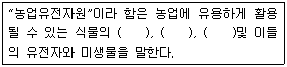

종자기사 (2007-03-04 기출문제)
1과목: 종자생산학
1. 춘화(vernalization)에 대한 설명으로 옳은 것은?
- 춘화시 저온을 감응하는 부위는 어린잎이다.
- 춘화를 응용하면 육종연한을 단축할 수 있다.
- 고온에 의하여 춘화되는 식물을 2년생 식물이라고 한다.
- 저장중인 종자가 저온에 감응하는 현상을 종자춘화라고 한다.
(정답률: 80%)

2. 종자의 발아를 촉진시키는 광과 온도를 대체할 수 있는 물질만을 나열한 것은?
- thiourea, ammonia
- ammonia, hydrogen cyanide
- hydrogen cyanide, gibberellin
- gibberellin, thiourea
(정답률: 50%)
3. 세포질 유전자적 웅성불임을 이용한 F1 종자생산에 필요한 계통들의 세포질(F,S)과 임성회복 유전자(Rf)의 조합이 옳게 표시된 것은?
- 화분친(R-계통) = (S)RfRf, 종자친(A-계통) = (F)rfrf, 유지친(B-계통) = (S)RfRf
- 화분친(R-계통) = (F)RfRf, 종자친(A-계통) = (S)rfrf, 유지친(B-계통) = (F)rfrf
- 화분친(R-계통) = (F)RfRf, 종자친(A-계통) = (F)rfrf, 유지친(B-계통) = (S)rfrf
- 화분친(R-계통) = (S)RfRf, 종자친(A-계통) = (S)rfrf, 유지친(B-계통) = (F)RfRf
(정답률: 19%)
4. 종자에 발생하는 사물기생균(死物寄生菌)의 포자가 많이 발생하는 저장고의 조건은?
- 저장고 내의 상대습도가 50% 이하이고, 온도가 5℃ 이하일 때
- 저장고 내의 상대습도가 50% 이하이고, 온도가 15℃ 이하일 때
- 저장고 내의 상대습도가 75% 이하이고, 온도가 5℃ 이하일 때
- 저장고 내의 상대습도가 75% 이하이고, 온도가 15℃ 이하일 때
(정답률: 알수없음)
5. 순도검사에서 이물(異物)의 범주에 속하는 것은?
- 손상 받지 않은 종자
- 원래 크기의 절반 미만인 종자
- 주름진 종자
- 미숙립
(정답률: 알수없음)
6. 광발아성 종자의 발아에 가장 효과적인 파장(波長)범위는?
- 290 ~ 350 nm
- 400 ~ 480 nm
- 540 ~ 600 nm
- 660 ~ 700 nm
(정답률: 알수없음)
7. 보리종자의 발아세 조사의 시작은 치상 후 며칠 째에 하는가?
- 4일째
- 5일째
- 6일째
- 7일째
(정답률: 알수없음)
8. 저장된 건조종자는 저장고 내의 대기 중 상대습도가 높아지면 수분을 흡수할 수 있다. 종자의 구성물질 중 수분을 가장 쉽게 흡수하는 성분은?
- 전분
- 단백질
- 지방질
- 무기물
(정답률: 84%)
9. 세포질적 웅성불임성을 이용하여 F1종자를 채종하고자 할 때 C 계통의 임성회복유전자를 고려하지 않아도 되는 작물은?
- 옥수수, 배추
- 배추, 양파
- 양파, 당근
- 당근, 옥수수
(정답률: 알수없음)
10. 웅성불임을 이용한 일대 잡종 채종에 대한 설명 중 틀린 것은?
- 유전양식이 핵내 유전과 세포질유전 양자에 의할 경우, 한 세포질이 가임이면 유전자와 관계없이 임성이 가임을 나타낸다.
- 유전양식이 핵내 유전과 세포질유전 양자에 의할 경우, 웅성불임 계통을 모본으로 하고, SS유전자를 갖는 계통을 화분친으로 하면 항상 차대에는 웅성불임 계통을 얻을 수 있다.
- 웅성불임성이 세포질에 의해서만 유전하는 경우, 불임계통유지는 용이하나, 일대 잡종을 만들 경우 과채류에서는 청과재배시도 반드시 수분수(受粉樹)가 필요하다.
- 웅성불임성이 세포질에 의해서만 유전하는 경우, F1의 임성을 조사해 보지 않는 한 불임주를 확인할 수 없으므로, 실 용화를 위해서는 웅성불임과 상관을 갖는 markergene의 탐색이 필요하다.
(정답률: 알수없음)
11. 다음 용어 설명 중 옳은 것은?
- 발아세 : 총 발아수를 총 조사일수로 나눈 수치
- 발아율 : 종자의 대부분(약 80%)이 발아한 비율
- 발아기 : 총 발아수를 총 조사일수로 나눈 값
- 발아세 : 치상 후 중간 조사일 까지 발아한 종자의 비율
(정답률: 67%)
12. 오이의 채종 재배시 보통 1주당 적당한 채종과(採種果)수(數)는?
- 1 ~ 2 과
- 3 ~ 4 과
- 5 ~ 7 과
- 8 ~ 10 과
(정답률: 알수없음)
13. 벼의 특정병에 대한 최고한도의 포장검사규격으로 옳은 것은?
- 원원종포 : 0.⑤%
- 원종포 : 0.02%
- 채종포 : 0.02%
- 원원종포 : 0.10%
(정답률: 알수없음)
14. 크고 충실하여 발아,생육이 좋은 종자를 가려내는 선종(選種)의 방법이 아닌 것은?
- 저장방법에 의한 선별
- 중량에 의한 선별
- 비중에 의한 선별
- 용적에 의한 선별
(정답률: 알수없음)
15. 대부분 곡물의 원종포에서 품종순도의 허용한계(최저한도)는?
- 97.0%
- 98.0%
- 99.0%
- 99.9%
(정답률: 알수없음)
16. 단일성 식물을 한계 일장 보다 긴 일장조건에 두면 어떤 반응을 보이는가?
- 발아 촉진
- 발아 지연
- 개화 촉진
- 개화 지연
(정답률: 80%)
17. 배낭모세포의 감수분열 결과 생긴 4개의 배낭세포 중 몇 개가 정상적인 세포로 남게 되는가?
- 1개
- 2개
- 3개
- 4개
(정답률: 알수없음)
18. 다음 중 가지 종자의 발아율이 크게 떨어지는 가장 큰 원인은?
- 수분 과다
- 수소 부족
- 산소 과다
- 유황 부족
(정답률: 알수없음)
19. 다음 중 무배유종자인 것은?
- 보리
- 팥
- 옥수수
- 메밀
(정답률: 알수없음)
20. 다음 중 나란히 맥을 가진 잎과 3배수의 화기구조를 가진 식물은?
- 콩
- 완두
- 감자
- 난초
(정답률: 70%)
2과목: 식물육종학
21. 양파의 웅성불임성을 이용하여 F1종자를 얻을 경우 가장 좋은 조합형은?
- SMsms×SMsms
- Smsms×NMsms
- Smsms×Nmsms
- Smsms×SMsMs
(정답률: 60%)
22. 20계통을 난괴법으로 4반복하여 생산성 검정 시험을 할 때 오차의 자유도는?
- 57
- 60
- 76
- 80
(정답률: 43%)
23. 동질배수체를 육종에 이용할 때 가장 불리한 점은?
- 임성
- 저항성
- 생육상태
- 종자의 크기
(정답률: 91%)
24. 게놈(genome)이란 생물이 생존하는데 필요한 최소한의 염색체의 집단이다. 1 게놈으로 되어 있는 반수체 작물은 상동 염색체를 몇 개나 가지고 있는가?
- n 개
- 2n-2 개
- 0 개
- 1/2n 개
(정답률: 10%)
25. 육종에서 후대까지 유용하게 이용할 수 있는 변이가 아닌 것은?
- 환경 변이
- 돌연 변이
- 염색체의 조환에 의한 변이
- 염색체의 교차에 의한 변이
(정답률: 79%)
26. 원연 간 교배에서 수정된 배주를 퇴화하기 전 태좌에 붙인채로 기내 배지에서 배양하거나 수정된 배주를 택좌로부터 분리 배양하여 식물체를 얻는 방법은?
- 배배양
- 배주배양
- 자방배양
- 경정배양
(정답률: 40%)
27. 내병성, 내한성을 검정하기 위하여 필요한 조치는?
- 작물 재배의 최적 조건을 조성한다.
- 이상환경이나 특수한 환경을 조성한다.
- 작물 재배관리를 철저히 한다.
- 촉성 재배나 억제 재배를 한다.
(정답률: 80%)
28. 종자증식 포장에서 포장검사를 실시하는 시기는?
- 유숙기에서부터 호숙기 사이
- 호숙기에서부터 고숙기 사이
- 유숙기
- 완숙기
(정답률: 알수없음)
29. 양적형질(量的形質)에 대하여 바르게 설명한 것은?
- 양적형질은 색깔이나 모양을 나타내는 형질이다.
- 양적형질의 변이는 대립변이(對立變異)를 나타낸다.
- 양적형질은 주로 polygene이 지배한다.
- 양적형질의 변이는 환경의 영향을 받지 않는다.
(정답률: 알수없음)
30. 신품종이 만들어진 후 농가에 보급될 때까지의 종자갱신 체계로서 알맞은 것은?
- 기본식물 → 원원종 → 원종 → 보급종 → 농가
- 기본식물 → 원종 → 원원종 → 보급종 → 농가
- 원원종 → 기본식물 → 원종 → 보급종 → 농가
- 원종 → 원원종 → 기본식물 → 보급종 → 농가
(정답률: 알수없음)
31. 다음 중 Apomixis에 속하지 않는 것은?
- 무포자생식
- 부정배 형성
- 위수정생식
- 영양번식
(정답률: 알수없음)
32. 집단 육종법(bulk method)의 특징으로 틀린 것은?
- 자연도태에 의해 우량형질이 없어질 위험이 없다.
- 잡종강세 개체를 잘못 선발할 위험이 적다.
- 선발 개체의 후대에서 분리가 적게 일어난다.
- 실용적으로 고정되었을 때에 선발을 시작한다.
(정답률: 알수없음)
33. 다음 중 계통 분리법에 해당되지 않는 것은?
- 집단선발법
- 성군집단선발법
- 1수 1렬법(一穗一列法)
- 초월육종법(超越育種法)
(정답률: 60%)
34. 육종에서 식물의 광주율을 이용하는데 그 주된 목적은?
- 교배
- 생산
- 품질개선
- 돌연변이 유발
(정답률: 알수없음)
35. 유전력의 이용에 관한 설명으로 옳은 것은?
- 유전력은 양적형질에 대한 선발지표로 이용될 수 있다.
- 유전력의 값이 0에 가까울수록 환경변이가 적음을 나타낸다.
- 자식성 작물에서는 세대경과에 따라 유전력의 값이 감소한다.
- 유전력은 다음 대의 선발개체수 산정과 무관하다.
(정답률: 알수없음)
36. 농작물 육종의 성과로 볼 수 없는 것은?
- 고추 비닐피복 재배의 확대 보급
- 배추의 년 중 재배 가능
- 왜성사과의 보급
- 대륜 국화의 보급
(정답률: 알수없음)
37. 자가수정 작물에서 가장 단기간에 신품종을 육성할 수 있는 방법은?
- 반수체 이용 육종
- 종속간 교잡육종
- 여교잡육종
- 잡종강세육종
(정답률: 알수없음)
38. 냉이의 삭과형에서 '부채꼴 × 창꼴'의 F1의 부채꼴이고, F2에서는 부채꼴과 창꼴이 15:1로 분리된다면, 이러한 유전인자는?
- 보족유전자
- 억제유전자
- 중복유전자
- 변경유전자
(정답률: 알수없음)
39. 다음 중 자연계에서 이미 존재하는 이질배수체로 적합한 것은?
- 배추 (Brassica sinensis)
- 재래평지 (Brassica campestris)
- 무 (Raphanus sativus)
- 평지 (Brassica napus)
(정답률: 알수없음)
40. 세포질에 들어 있는 유전 물질을 지칭하는 것은?
- 키아스마
- 플라스마진
- 상위유전자
- 삼염색체(trisomic)
(정답률: 알수없음)
3과목: 재배원론
41. 다음 중 가지의 굴곡유도, 낙과방지, 과실의 비대와 성숙을 촉진하는 식물 생장조절제는?
- 지베렐린
- 오옥신
- 사이토카이닌
- 프로리겐
(정답률: 알수없음)
42. 밭작물 생육에 가장 적합한 토양의 수분항수(水分恒數)는?
- 최대용수량
- 최소용수량
- 풍건상태
- 건토상태
(정답률: 28%)
43. 벼의 출수생태를 올바르게 설명한 것은?
- 벼에서 감광형은 묘대일수 감응도가 낮고, 만식 적응성도 크다.
- 조기수확을 목적으로 조파조식 할 때는 감광형이 알맞다.
- 조파조식 할 때보다 만파만식 할 때에 출수기 지연 정도는 감광형이 크다.
- 일반적으로 적도와 같은 저위도지대에서 감온성이 큰 것은 수확량 증대에 유리하다.
(정답률: 알수없음)
44. 작물의 내건성(drought tolerance)은 생육시기에 따라 다른 데, 다음 중 화곡류의 생육시기별 내건성 설명으로 옳은 것은?
- 생식세포의 감수분열기에 가장 약하고, 분얼기에 그 다음으로 약하며, 유숙기에 비교적 강하다.
- 분얼기에 가장 약하고, 생식세포의 감수분열기에 그 다음으로 약하며, 유숙기에 비교적 강하다.
- 출수개화기에 가장 약하고, 생식세포의 감수분열기에 그 다음으로 약하며, 분얼기에 비교적 강하다.
- 생식세포의 감수 분열기에 가장 약하고, 출수개화기와 유숙기에 그 다음으로 약하며, 분얼기에는 비교적 강하다.
(정답률: 42%)
45. 작물의 도복을 방지하기 위한 대책이 아닌 것은?
- 인산, 칼륨, 규산 사용량을 늘린다.
- 2,4-D를 처리한다.
- 질소를 추가로 시용하여 생장량을 크게 한다.
- 키가 작고, 대가 강한 품종을 선택한다.
(정답률: 알수없음)
46. 감자(뿌리작물)의 수량계산 공식으로 옳은 것은?
- 단위면적 당 식물체 수 × 식물체 당 덩이줄기 수 × 덩이줄기의 무게
- 단위면적 당 덩이줄기 수 × 식물체 당 무게
- 단위면적 당 식물체 수 × 단위면적 당 덩이줄기 수
- 식물체 당 무게 × 단위면적 당 식물체 수
(정답률: 알수없음)
47. 식물이 한 여름철을 지낼 때 생장이 현저히 쇠퇴, 정지하고, 심한 경우 고사하는 현상은?
- 하고현상
- 좌지현상
- 저온장해
- 추고현상
(정답률: 알수없음)
48. 야간조파에 가장 효과가 큰 광의 파장은?
- 400nm 부근의 자색광
- 480nm 부근의 청색광
- 520nm 부근의 녹색광
- 650nm 부근의 적색광
(정답률: 40%)
49. 식물의 [지리적 미분법]을 제정한 사람은?
- DE CANDOLLE
- VAVILOV
- C.O.MILLER
- DARWIN
(정답률: 알수없음)
50. 배(胚)를 구성하는 요소들로만 나열된 것은?
- 유아, 떡잎, 배축, 유근
- 종피, 주심, 배젖, 배축
- 주심, 배젖, 유아, 유근
- 유아, 떡잎, 배주, 유근
(정답률: 알수없음)
51. 다음 중 성 표현의 조절작용을 하는 식물 호르몬은?
- CCC
- 에틸렌
- Amo-1618
- Rh-531
(정답률: 알수없음)
52. 다음 중 작물을 생육적온에 따라 분류했을 때 저온작물인 것은?
- 콩
- 벼
- 감자
- 옥수수
(정답률: 46%)
53. 맥류의 내동성이 저하되는 경우는?
- 전분함량이 많을 때
- 친수성 교질이 많을 때
- 단백질에 -SH기가 많을 때
- 칼슘이온이 많을 때
(정답률: 알수없음)
54. 위조저항성 및 휴면아 형성과 관련 있는 호르몬은?
- ABA
- GA
- Etylene
- Auxin
(정답률: 알수없음)
55. 다음 중 고구마를 저장할 때 가장 좋은 호르몬은?
- 움 저장
- 굴 저장
- 상온 저장
- 냉온 저장
(정답률: 알수없음)
56. 품종의 내병성 설명으로 틀린 것은?
- 병균에 대한 품종간 반응이 다르다.
- 질소질 과용과 진딧물은 발병 요인이 된다.
- 환경요인에 의해서는 이병화가 거의 없다.
- 병원균은 분화된다.
(정답률: 알수없음)
57. 녹체 춘화형 식물들로만 나열된 것은?
- 추파맥류, 봄 올무
- 봄 올무, 양배추
- 양배추, 히요스
- 히요스, 잠두
(정답률: 40%)
58. 토양의 pH가 1단위 감소하면 수소이온의 농도는 몇 %증가하는가?
- 1%
- 10%
- 100%
- 1000%
(정답률: 알수없음)
59. 식물분류학적 방법에 의한 작물 분류가 아닌 것은?
- 벼과 작물
- 콩과 작물
- 가지과 작물
- 공예작물
(정답률: 알수없음)
60. 연작에 의한 기지현상이 가장 심하여 10년 이상 휴작을 요하는 작물은?
- 아마, 인삼
- 수박, 고추
- 시금치, 생강
- 감자, 땅콩
(정답률: 알수없음)
4과목: 식물보호학
61. 다음 중 잡초의 생육 특성 설명으로 틀린 것은?
- 잡초는 일반적으로 종자 크기가 작아서 발아가 빠르다.
- 잡초는 독립 생장을 빨리하므로 일반적으로 초기생장은 늦은 편이다.
- 잡초는 생육의 유연성(plasticity)이 크다.
- 대부분의 문제 잡초들은 C4식물이다.
(정답률: 알수없음)
62. 곤충의 분산과 이동에 관계하는 것으로 가장 거리가 먼 것은?
- 환경 요인
- 먹이
- 짝 찾기
- 휴면
(정답률: 알수없음)
63. 다음 중 월동태가 틀리게 짝지어진 것은?
- 벼줄기굴파리 - 번데기
- 끝동매미충 - 노숙 약충
- 벼잎벌레 - 성충
- 목화진딧물 - 알
(정답률: 19%)
64. 비 기생성 질병인 토마토 배꼽 썩음병의 발생과 관련이 가장 큰 것은?
- 칼슘
- 망간
- 고토
- 규소
(정답률: 알수없음)
65. 잡초의 생물적 방제에 관한 설명으로 옳은 것은?
- 잡초 방제에 효과적인 천적을 이용하는 것이다.
- 잡초의 완전 근절을 목표로 한다.
- 영속성 효과가 없다.
- 화학적 방제에 비해 효과가 빠르다.
(정답률: 알수없음)
66. 액상 시용제 농약의 물리적 성질 중 맞는 내용은?
- 침투성이 강한 농약은 약해가 발생 할 우려가 적다.
- 부착성은 속효성을 지닌 보호 살균제로 적합하다.
- 접촉각(Θ)이 크면 식물체 표면에 적셔지기 어렵다.
- 계면활성제는 표면장력을 크게 한다.
(정답률: 알수없음)
67. 다음 중 보호 살균제 농약으로 가장 적합한 것은?
- 석회보르도액
- 훼나리유제
- 농용신수화제
- 가스가민액제
(정답률: 85%)
68. 다음 각 식물 병에 대한 방제 방법으로 부적합한 것은?
- 맥류의 마름병 : 윤작을 한다.
- 시설재배 상추의 균핵병 : 온도를 15 ~ 20℃ 정도로 낮춘다.
- 배추 무사마귀병 : 토양에 석회를 시용하여 토양산도를 올려 준다.
- 벼 도열병 : 질소비료의 과용을 삼가 한다.
(정답률: 알수없음)
69. 양성 주광성을 지닌 곤충이 아닌 것은?
- 나비
- 바퀴
- 파리
- 나방
(정답률: 60%)
70. 앞창자 신경계와 협동하여 변태호르몬을 분비하며, 머리 속에 있는 한 쌍의 신경구 모양의 조직은?
- 편도세포
- 지방체
- 알라타체
- 고리신경줄
(정답률: 70%)
71. 식물생리병 중 강한 광선에 의한 병은?
- 토마토 일소병
- 사과 수심병
- 수박 탄저병
- 토마토 배꼽썩음병
(정답률: 알수없음)
72. 곤충의 형태에 대한 설명 중 틀린 것은?
- 곤충은 알 → 유충 → 번데기 → 성충으로 변태한다.
- 성충의 몸은 머리, 가슴, 배의 3부분으로 구별된다.
- 다리와 날개는 곤충의 배에 부착되어 있다.
- 곤충의 머리는 더듬이, 눈, 입틀로 구성되어 있다.
(정답률: 알수없음)
73. 벼 도열병에 대한 방제법으로 적합하지 못한 내용은?
- 찬물을 관수 한다.
- 약제로는 가드수화제(올타). 이소란유제(후지왕)등이 있다.
- 질소비료나 녹비의 과용을 피한다.
- 병든 볏짚을 모아서 완숙 퇴비를 만든다.
(정답률: 알수없음)
74. 다음 중 잡초 제거의 최적기는?
- 작물 전생육기간 중 첫 1/3 ~ 1/2 기간인 생육초기
- 작물 전생육기간 중 1/2 ~ 2/3 기간
- 작물 전생육기간 중 생육 중기 이후
- 작물의 초관(canopy)형성 이후
(정답률: 55%)
75. 벼물바구미 성충방제를 위하여 펜치온(fenthion)유제 50%를 1000배로 희석하여 10a당 140L를 살포하려고 한다. 논 전체 살포면적이 80a이라면 이 때 소요되는 약량은?
- 140mL
- 560mL
- 1120mL
- 2800mL
(정답률: 알수없음)
76. 잡초방제 방법 중 가장 바람직하고 이상적인 것은?
- 생태적 방제
- 기계적 방제
- 화학적 방제
- 종합적 방제
(정답률: 알수없음)
77. 아래 병해 중 기주 범위가 넓은 다범성 병원균에 의해 초래되는 것은?
- 딸기 잿빛곰팡이병
- 국화 흰녹병
- 사과 갈색무늬병
- 벼 도열병
(정답률: 알수없음)
78. 식물 병원체의 동정 중 코흐(Koch)의 원칙에 적용 할 수 있는 병원균은?
- 흰가루병균
- 파이토플라스마
- 녹병균
- 도열병
(정답률: 20%)
79. 광 조건에 따른 잡초의 분류에서 암발아 잡초들로 짝지어진 것은?
- 바랭이, 메귀리
- 강피, 향부자
- 개비름, 소리쟁이
- 냉이, 광대나물
(정답률: 알수없음)
80. 농약의 구비조건으로 틀린 것은?
- 약효가 확실한 것
- 약해가 없을 것
- 급성, 만성 독성이 낮을 것
- 다른 약제와 혼용 범위가 좁을 것
(정답률: 70%)
5과목: 종자관련법규
81. 종자산업법상 규정에 의한 품종명칭의 등록을 받을 수 있는 것은?
- 숫자, 기호 및 그림 등으로 함께 표시한 품종명칭
- 당해 품종 또는 당해 품종의 수확물의 산지, 품질, 수확량, 가격, 용도, 생산시기, 생산방법, 사용방법 또는 사용시기로만 표시한 품종명칭
- 공공질서 또는 선량한 풍속을 문란하게 할 우려가 있는 품종명칭
- 당해 품종의 원산지를 오인 또는 혼동하게 할 우려가 있는 풍종 명칭
(정답률: 알수없음)
82. 관련 법에 의한 자격을 갖춘 자로서 종자업자가 생산하여 판매, 수출 또는 수입하고자 하는 종자를 보증하는 자는?
- 종자판매사
- 종자관리사
- 품종보호권자
- 종자육성자
(정답률: 알수없음)
83. 종자관리 요령 상의 채소작물의 원종(교잡종) 종자검사 규격으로 옳은 것은?
- 정립의 최저한도는 85.0%이다.
- 정립의 최저한도는 90.0%이다.
- 정립의 최저한도는 96.0%이다.
- 정립의 최저한도는 98.0%이다.
(정답률: 알수없음)
84. 종자산업법상 작물의 종자업을 영위하고자 할 경우 1인 이상의 종자관리사를 두어야만 하는 것은?
- 장미
- 뽕
- 인삼
- 양배추
(정답률: 알수없음)
85. 종자산업법상의 “농업유전자원”의 설명 중 ( )에 해당 되지 않는 것은?

- 종자
- 생식세포
- 화분(花粉)
- 세포주(細胞株)
(정답률: 43%)
86. 벼 포장검사 규격 중 특정병에 해당 되는 것은?
- 도열병
- 이삭누룩병
- 선충심고병
- 흰잎마름병
(정답률: 60%)
87. 경기도 양주시에 주된 생산시설을 갖고 있는 K씨는 종자업 등록을 하고자 할 경우 누구에게 신청서를 제출하여야 하는가?
- 양주군수
- 경기도지사
- 종자관리소장
- 농촌진흥청장
(정답률: 알수없음)
88. 보호품종의 종자를 증식, 생산, 조제, 양도, 대여, 수출 또는 수입하거나 양도 또는 대여의 청약을 하는 행위를 법적으로 무엇이라 하는가?
- 보호품종의 집행
- 보호품종의 실시
- 보호품종의 실행
- 보호품종의 사용
(정답률: 80%)
89. 종자관리 요령 중 수입적응성 시험의 심사기준에 관한 설명으로 틀린 것은?
- 재배시험기간은 2작기 이상으로 하되 실시기관의 장이 필요하다고 인정하는 경우에는 재배 시험기간을 단축 또는 연장할 수 있다.
- 재배시험지역은 최소한 2개 지역 이상으로 하되 품종의 주 재배지역은 반드시 포함되어야 하며, 작물의 생태형 또는 용도에 따라 지역 및 지대를 결정한다.
- 표준품종은 국내외 품종 중 널리 재배되고 있는 품종 3개 이상으로 한다.
- 평가대상 형질은 작물별 품종의 목표 형질을 필수형질과 추가형질을 정하여 평가한다.
(정답률: 40%)
90. 종자산업법상 등록되지 않은 벼 품종 명칭을 사용하여 종자를 판매하였을 경우 과태료 기준은?
- 100 만원 이하
- 300 만원 이하
- 500 만원 이하
- 1000 만원 이하
(정답률: 알수없음)
91. 종자산업법규상에서 정하는 유통종자의 품질표시 사항이 아닌 것은?
- 품종의 명칭
- 종자의 수량
- 종자의 생산 지역
- 종자의 발아율
(정답률: 알수없음)
92. 종자산업법상 품종보호권이 무효로 된 사유가 천재, 지변, 기타 불가피한 사유에 의한 것으로 인정되었을 경우 그 기간이 만료된 후 얼마 이내에 청구에 의하여 그 무효처분을 취소할 수 있는가?
- 3개월 이내
- 6개월 이내
- 9개월 이내
- 1년 이내
(정답률: 알수없음)
93. 종자산업법에서 보증종자가 종자보증의 효력을 잃은 것으로 보기 어려운 것은?
- 보증 표시를 하지 아니한 때
- 보증의 유효기간이 경과한 때
- 포장종자를 당해 종자를 보증한 보증기관 또는 종자 관리사의 감독하에서 분포장한 때
- 보증한 포장종자를 해장 또는 개장한 때
(정답률: 알수없음)
94. 다음 중 품종생산, 수입판매신고서에 기재하는 사항이 아닌 것은?
- 품종이 속하는 작물의 학명 및 일반명
- 재배 적응 지역의 특성 설명
- 품종의 특성 설명
- 품종 육성 과정의 설명
(정답률: 10%)
95. 다음 중 품종생산, 수입판매신고서에 기재하는 사항이 아닌 것은?
- 품종보호출원의 변경, 포기 또는 취하
- 품종보호출원의 거절에 대한 이의신청
- 우선권의 주장 또는 그 취하
- 복대리인의 선임
(정답률: 알수없음)
96. 종자산업법상 품종보호료가 면제되는 경우가 아닌 것은?
- 사회봉사단체가 품종보호권의 설정등록을 받기 위하여 품종보호료를 납부하여야 하는 경우
- 국가 또는 지방자치단체가 품종보호권의 설정등록을 받기 위하여 품종보호료를 납부하여야 하는 경우
- 국가 또는 지방자치단체가 품종보호권의 존속기간 중에 품종보호료를 납부하여야 하는 경우
- 국민기초생활보장법 제5조의 규정에 의한 수급권자가 품종보호권의 설정등록을 받기 위하여 품종보호료를 납부하여야 하는 경우
(정답률: 58%)
97. 품종목록등재대상작물의 종자를 판매 또는 보급하고자 할 때 종자산업법에 따라 종자의 보증을 받아야 되는 경우는?
- 1대 잡종의 친 또는 합성품종의 친으로만 쓰이는 경우
- 증식목적으로 판매한 후 생산된 종자를 생산자가 다시 전량 매입하는 경우
- 시험 또는 연구목적으로 쓰이는 경우
- 생산된 종자를 전량 수출하는 경우
(정답률: 42%)
98. 종자산업법상 종자의 보증 중 종자관리사가 행하는 보증을 가리키는 것은?
- 자체보증
- 국가보증
- 농림보증
- 특허보증
(정답률: 알수없음)
99. 종자산업법상 과수 및 임목의 경우를 제외하고 품종보호권의 존속기간으로 옳은 것은?
- 품종보호권의 설정등록이 있는 날부터 15년
- 품종보호권의 설정등록이 있는 날부터 20년
- 품종보호권의 설정등록이 있는 날부터 25년
- 품종보호권의 설정등록이 있는 날부터 30년
(정답률: 알수없음)
100. 벼 포장검사결과 표본조사 10000주 조사구에서 이형주 10주, 이품종주 20주, 이종종사주 30주가 조사되었다. 품종 순도는?
- 99.9%
- 99.7%
- 99.5%
- 99.4%
(정답률: 10%)